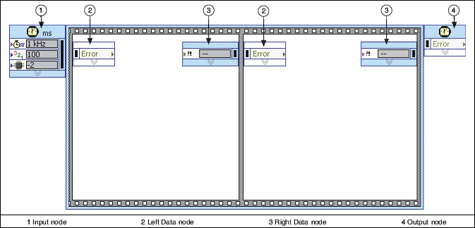
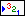

Timed Sequence Structure
Owning Palette: Timed Structures and VIs
Requires: Base Development System (Real-Time, Windows)
A Timed Sequence structure consists of one or more subdiagrams, or frames, timed by an internal or external timing source that execute sequentially. A Timed Sequence structure executes each frame only once and, unlike a Timed Loop, does not repeat iterations. Use the Timed Sequence structure when you want to develop VIs that execute only once with precise timing, execution feedback, timing characteristics that change dynamically, or several levels of execution priority. Right-click the Timed Sequence structure border to add, delete, insert, and merge frames.

 Add to the block diagram Add to the block diagram |
 Find on the palette Find on the palette |
The Timed Sequence structure includes the (1) Input and (4) Output nodes, and (2) Left and (3) Right Data nodes for each frame, as shown in the previous illustration. By default, nodes of the Timed Sequence structure do not display all of the available input and output terminals. You can resize nodes or right-click a node and use the shortcut menu to display node terminals. Right-click the border of a Timed Sequence structure and select Show Left Data Node or Show Right Data Node from the shortcut menu to display each node.
Double-click the Input Node to display the Configure Timed Sequence dialog box, where you can configure the Timed Sequence structure. The values you enter in the Configure Timed Sequence dialog box appear as options in the Input Node.
The following table lists node terminals of the Timed Sequence structure.
| Deadline | Specifies the time when the first frame must complete. The deadline value is relative to the start of the Timed Sequence structure and is specified in units of the frame timing source. Specifying a value of -1 indicates no deadline. | |
| Error | Propagates errors through the structure. The Timed Sequence structure does not execute if Error receives an error condition. | |
| Structure Name | Specifies a name for the Timed Sequence structure. | |
 | Offset | Specifies the length of time a Timed Sequence structure waits to begin execution of the first frame. The offset value is relative to the start of the Timed Sequence structure and is specified in units of the timing source. |
|  | Priority | Specifies the priority for the execution of the Timed Sequence structure. The priority specifies when the Timed Sequence structure executes on the block diagram relative to other objects on the block diagram. The value for the Priority input must be a positive integer between 1 and 65,535. |
 | Processor | Specifies the processor you want to handle execution. The default is -2, which means LabVIEW automatically assigns a processor. To manually assign a processor, enter a number between 0 and 255, where 0 represents the first processor. If you enter a number that exceeds the number of available processors, you generate a run-time error and the timed structure does not execute. |
 | Source Name | Specifies the name of the timing source to use for controlling the structure. The timing source must be created on the block diagram using the Create Timing Source VI or selected from the Configure Timed Sequence dialog box. |
| Timeout | Specifies the maximum amount of time a Timed Sequence structure can wait to begin execution of the first frame. The default is -1, which means that no timeout is specified for the next frame. The timeout value is relative to the start of the structure and is specified in units of the frame timing source. |
| Actual End [f-1] (Unavailable in first frame) | Returns the actual end time for the previous frame (f-1). The actual end value is relative to the start time of the Timed Sequence structure and is specified in units of the frame timing source. |
| Actual Start [i] (First frame only) | Returns the actual start time of the current iteration (i). The actual start value is relative to the start time of the Timed Sequence structure and is specified in units of the structure timing source. |
| Actual Start [f] | Returns the actual start time of the current frame (f). The actual start value is relative to the start time of the Timed Sequence structure and is specified in units of the frame timing source. |
| Deadline | Returns the deadline value for the current frame. |
| Error | Propagates errors through the structure. |
| Expected End [f-1] (Unavailable in first frame) | Returns the expected end time for the previous frame (f-1). The expected end value is relative to the start time of the Timed Sequence structure and is specified in units of the frame timing source. |
| Expected Start [i] (First frame only) | Returns the expected start time of the current iteration (i). The expected start value is relative to the start time of the Timed Sequence structure and is specified in units of the structure timing source. |
| Expected Start [f] | Returns the expected start time of the current frame (f). The expected start value is relative to the start time of the Timed Sequence structure and is specified in units of the frame timing source. |
| Finished Late? [f-1] (Unavailable in first frame) | Returns TRUE if the Timed Sequence structure does not complete the previous frame before the specified deadline. |
| Frame Duration (Unavailable in first frame) | Returns the duration time of the previous frame. The frame duration is relative to the start of the frame and is specified in units of the frame timing source. |
| Global End Time (Unavailable in first frame) | Returns a time stamp for the end of the previous frame in nanoseconds. |
| Global Start Time | Returns a time stamp for the start of the current frame in nanoseconds. |
| Offset (First frame only) | Returns the offset value for the start of the first frame. |
| Priority | Returns the priority value for the current frame. |
| Processor | Returns the processor you assigned to handle execution, if you assigned one. Otherwise, returns -2, which means LabVIEW automatically assigned a processor. |
| Start (Unavailable in first frame) | Returns the start time for the current frame. |
| Timeout | Returns the timeout value for the current frame. |
| Wakeup Reason | Returns an enumerated type with the reason for the execution start of the current iteration. The possible values are 0 for Normal, 1 for Aborted, 2 for Asynchronous wakeup, 3 for a Timing source error, 4 for a Timed loop error, and 5 for Timeout. |
| Deadline (Unavailable in last frame) | Specifies the time when the next frame must complete. The deadline value is relative to the start of the next frame and is specified in units of the frame timing source. The default is -1, which means unchanged. | |
| Error | Propagates errors through the structure. If Error receives an error condition, the Timed Sequence structure executes the next frame untimed. | |
| Priority (Unavailable in last frame) | Specifies the priority for the execution of the next frame. The priority specifies when the next frame executes on the block diagram relative to other objects on the block diagram. The value for the Priority input must be a positive integer between 1 and 65,535. The default is -1, which means no change from the priority value of the previous frame. | |
| Processor | Specifies the processor you want to handle execution. The default is -1, which means LabVIEW assigns the same processor specified in the Input node. Enter -2 to allow LabVIEW to assign the processor. To manually assign a processor, enter a number between 0 and 255, where 0 represents the first available processor. If you enter a number that exceeds the number of available processors, you generate a run-time error and the timed structure does not execute. |
| Start (Unavailable in last frame) | The start time specifies the time the next frame should start executing. Specify a start time value relative to the start of the current frame in units of the frame timing source. The default is -1, which means unspecified. | |
| Timeout (Unavailable in last frame) | Specifies the maximum amount of time the next frame can wait to begin execution. The default is -1, which means that no timeout is specified for the next frame. The timeout value is relative to the end time of the current frame and is specified in units of the frame timing source. |
| Actual End [f-1] | Returns the actual end time for the final frame (f-1). The actual end value is relative to the start time of the Timed Sequence structure and is specified in units of the frame timing source. |
| Error | Propagates errors received by the Timed Sequence structure and returns errors from the frames. |
| Expected End [f-1] | Returns the expected end time for the final frame (f-1). The expected end value is relative to the timed structure if the frame timing source is not reset at the beginning of the iterations. The expected end value is specified in units of the timing source. |
| Finished Late? [f-1] | Returns TRUE if the final frame does not complete before the specified deadline. |
| Frame Duration | Returns the duration time of the previous frame. The frame duration is relative to the start of the frame and is specified in units of the frame timing source. |
| Global End Time | Returns a time stamp for the end of the previous frame in nanoseconds. |
| Iteration Duration | Returns a time stamp of the execution length of all of the frames. The iteration duration is relative to the start of the Timed Sequence structure and is specified in units of the timing source. |
| Processor | Returns the processor you assigned to handle execution, if you assigned one. Otherwise, returns -2, which means LabVIEW automatically assigned a processor. |
Refer to the Configuring Timed Sequence Structures topic for information about using and configuring the Timed Sequence structure.
To convert a Timed Sequence structure to a Timed Loop, right-click the Timed Sequence structure and select Replace with Timed Loop from the shortcut menu. To convert a Timed Sequence structure to a Flat Sequence structure, right-click the Timed Sequence structure and select Replace with Flat Sequence from the shortcut menu.